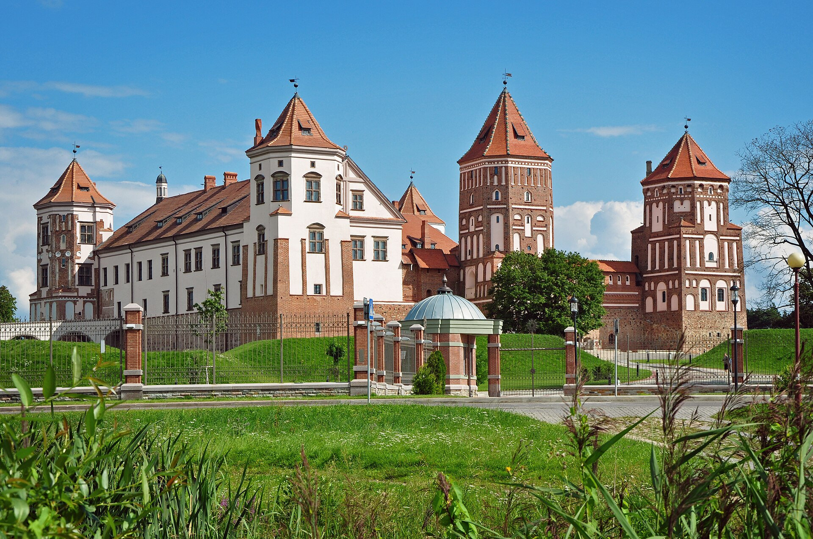
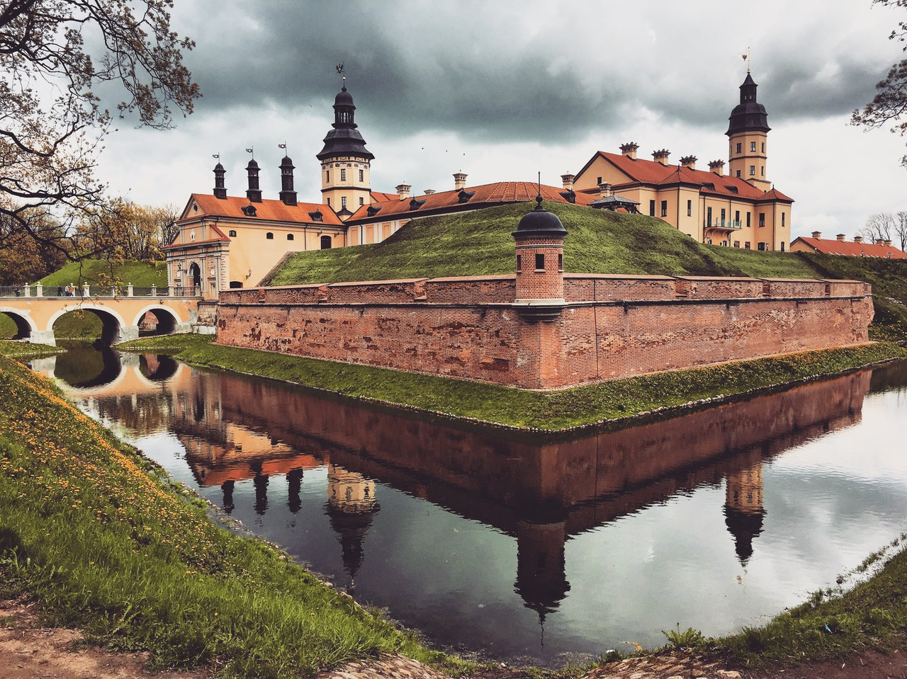
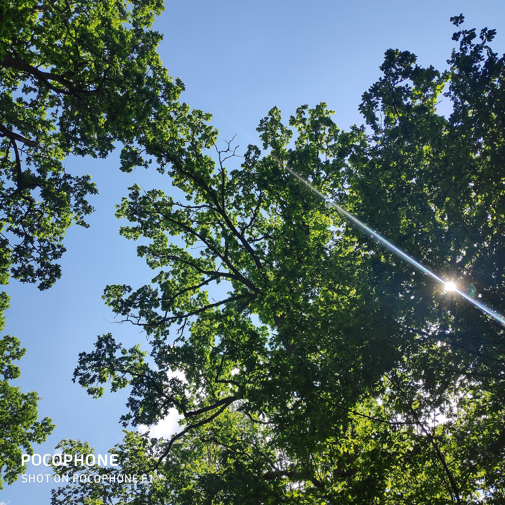
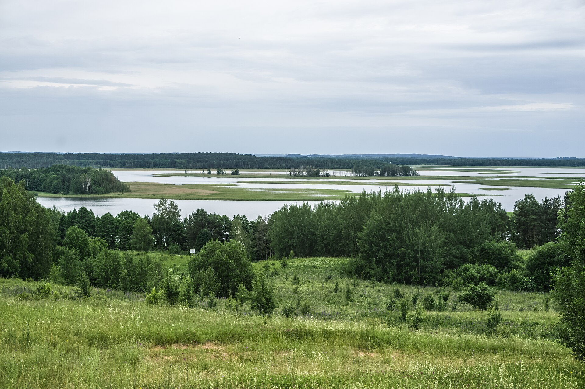
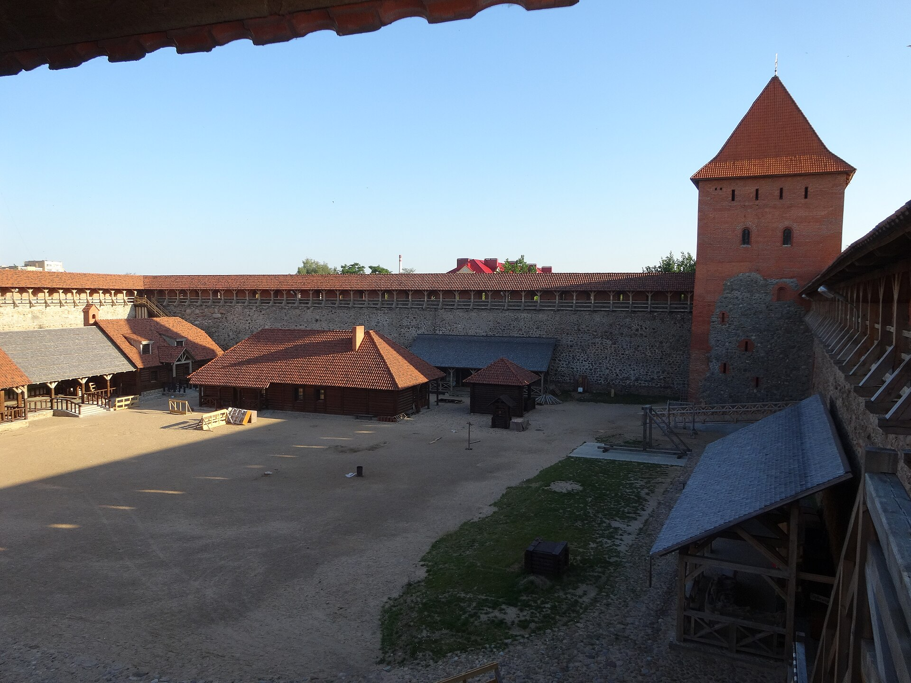
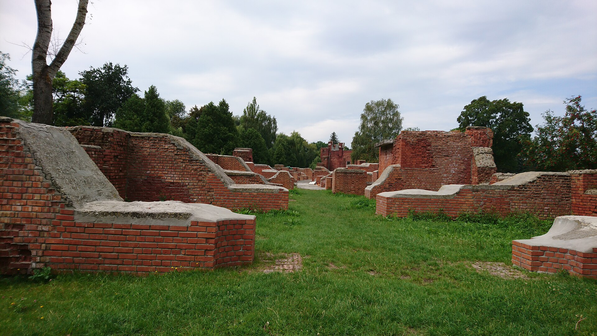
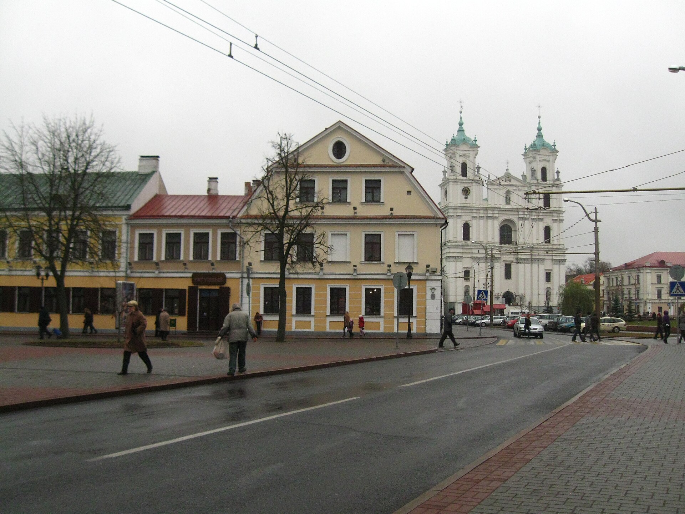
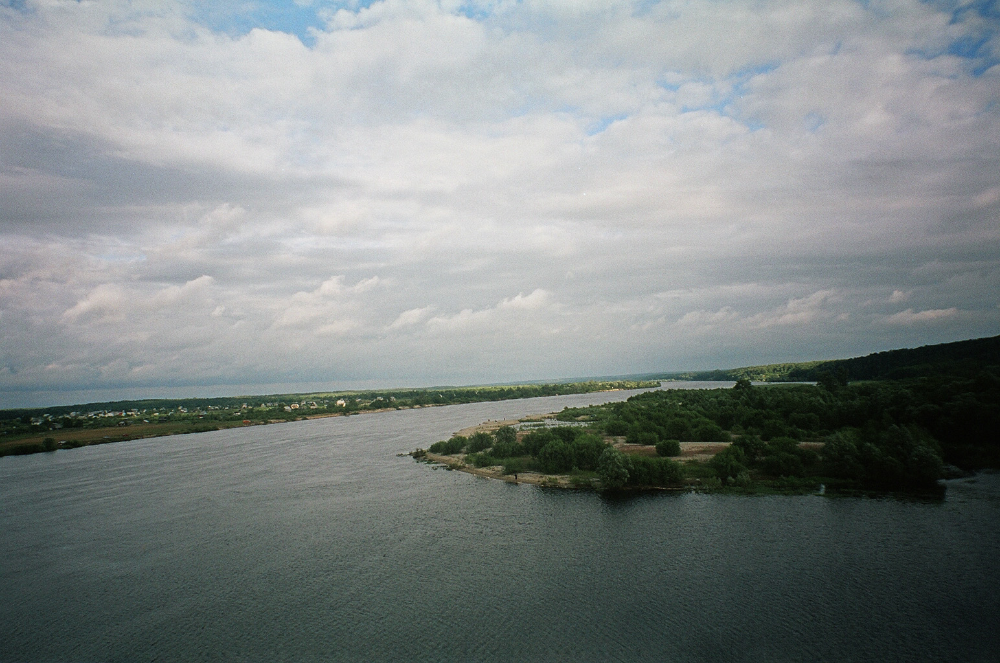
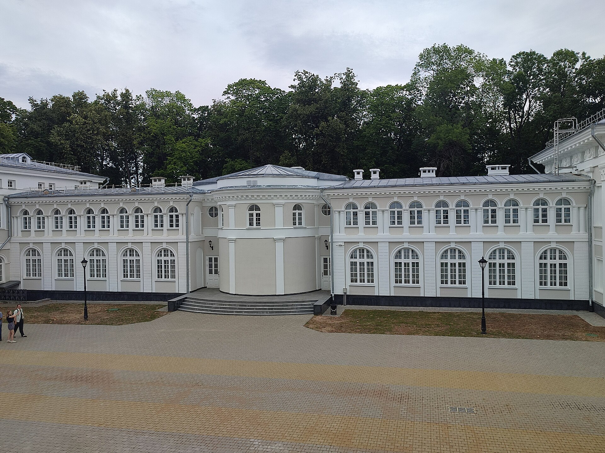
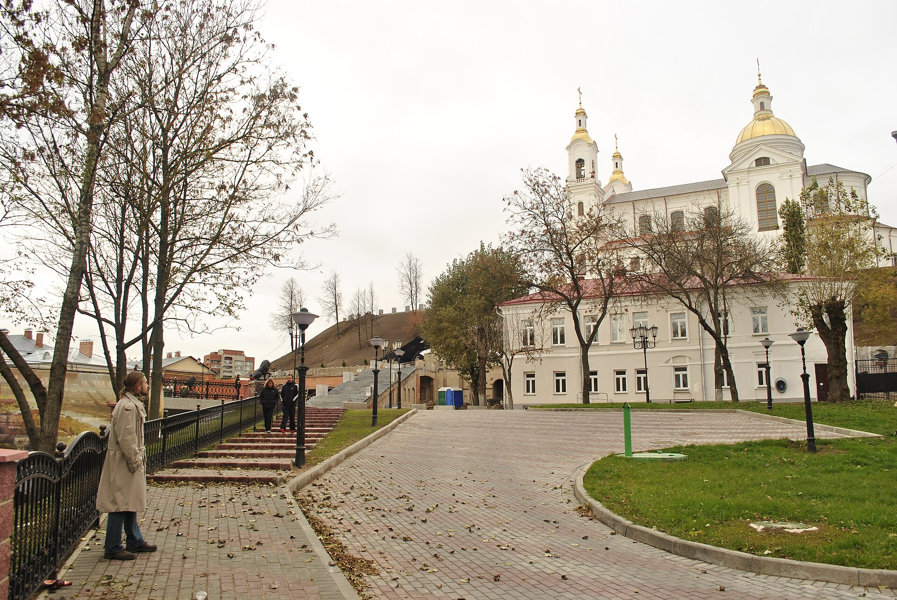

Мінская вобласць · 1 дзень
Мірскі замак
Цагляныя вежы, вал і вада вакол адной з самых пазнавальных рэзідэнцый краіны.
Мапа адкрыццяў
Націсні на картку, каб адкрыць гісторыю маршруту, яго тэмп і важныя прыпынкі.
10 мясцін · 6 абласцей

Мінская вобласць · 1 дзень
Цагляныя вежы, вал і вада вакол адной з самых пазнавальных рэзідэнцый краіны.

Мінская вобласць · 1 дзень
Палацавы парк, старыя алеі і павольны маршрут па гістарычным цэнтры.

Брэсцкая вобласць · 2 дні
Веладарожкі пад кронамі векавых дрэў і сустрэча з сімвалам беларускай прыроды.

Віцебская вобласць · 2 дні
Вада, пагоркі і доўгія вечары на беразе з выглядам на астраўкі.

Гродзенская вобласць · 1 дзень
Моцныя сцены XIV стагоддзя і невялікае мястэчка, якое зручна абысці пешшу.

Брэсцкая вобласць · 1 дзень
Мемарыял, набярэжная Мухаўца і вячэрняя прагулка па вуліцы Савецкай.

Гродзенская вобласць · выходныя
Старыя храмы, стромкія вуліцы і горад, які добра чытаецца без спешкі.

Гомельская вобласць · 2 дні
Рака, трыснёг і назіранне за птушкамі ў павольным рытме Палесся.

Магілёўская вобласць · 1 дзень
Класічныя фасады і адноўленыя інтэр’еры сярод старога парку.

Віцебская вобласць · выходныя
Мастацкія майстэрні, старыя дваракі і рака, якая збірае горад разам.